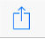

<main>
    <ng-container *ngIf="installer.nativeInstaller; else iosInstructions">
        {{installer.nativeInstaller.prompt()}}
    </ng-container>

    <ng-template #iosInstructions>
        <p>On iOS click the icon at the bottom of the screen that looks like this: </p>
        
        <br />
        <p>Then click Add to Home</p>
    </ng-template>
</main>